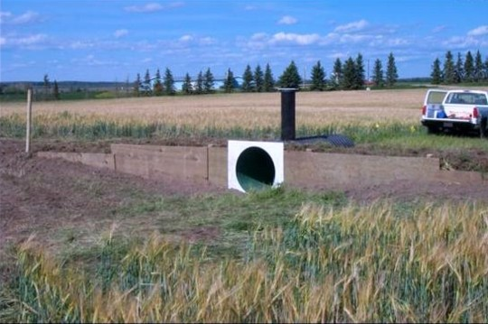
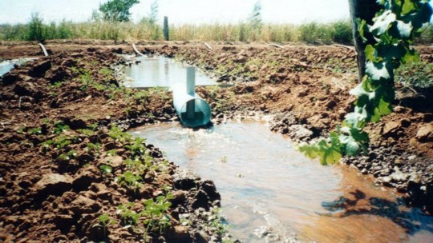
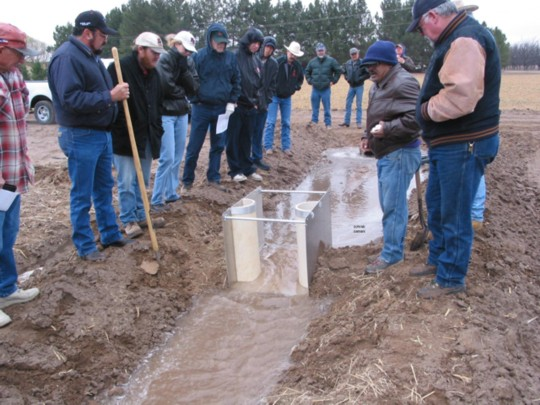
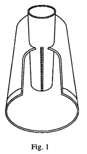
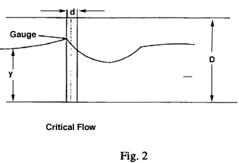
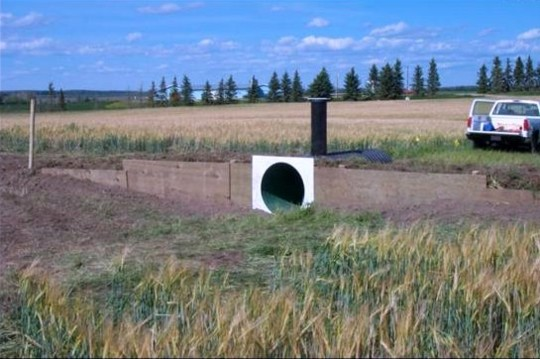
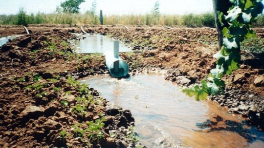
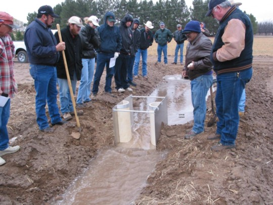

Circular Flume installed in Alberta (Canada)

Circular Flume installed in a Vineyard in Australia

S_M Flume, NMSU, March 2004

S-M Flume installed in a canal in Dushanbeh, Tajikstan, June 2005.
Zohrab Samani, Associate Professor*
Esteban Herrera, Extension Horticulturist
Measuring water in open channels is a basic element of water conservation. With the increasing demand for improved water management techniques, there is a serious need for low-cost and accurate water-measuring devices. Ever since the development of the Parshall flume, attempts have been made to simplify the construction and improve the accuracy of water-measuring devices in open channels.
The circular flume is an appropriate device for measuring flow through furrows because its circular shape fits to the natural shape of a furrow, reducing the possibility of lateral flow around the flume. The device also has been used successfully in lined and unlined canals.
High costs have prevented the use of water measuring flumes by growers. However, recently a practical water measuring device has been designed that can be used by growers at low cost: the circular flume.
The circular flume is a simple device made of two pieces of polyvinyl chloride (PVC) pipe, one installed vertically inside the other (fig. 1). The diameter of the inner column should be approximate one-third of the flume's diameter (0.25 to 0.32). The inner column reduces the cross-section of the flow, creating a critical flow condition. A gauge at the upstream side of the inner column (figs. 1 and 2) measures the depth of the water upstream of the critical flow section.
The device is designed to create a critical flow by reducing the flow's cross-section. A 2-ft length flume can be constructed from PVC pipes or a combination of PVC and corrugated pipes. For small water courses such as furrow or small streams, flumes are normally constructed from PVC pipes. For larger streams, where the availability of large PVC pipe is limited, the flumes are constructed from a combination of corrugated metal pipes and PVC pipes.
To construct a simple circular flume for measuring flows in a furrow or in a small stream, use a 2-ft section of 6" nominal size schedule-40 PVC pipe and a 1-ft section of 2" schedule-40 PVC pipe. Cut a 2" hole in the 6" pipe, and install the 2" pipe vertically inside the 6" pipe. Install the vertical pipe 1.5 ft from the entrance of the 6" pipe (fig 1). Round the bottom end of the 2" pipe so that it can fit easily inside the 6" pipe. Install a gauge at the upstream side of the inner pipe to measure the depth of the flow. Cut a notch at the top of the 6" pipe upstream of the gauge to facilitate reading. Once flow depth is measured, flow rate can be calculated using the calibration table. The depth of the water can also be measured inside the 2" pipe by a 0.5" perforation at the top of the pipe. Measuring the flow depth inside the 2" pipe is preferable because it reduces fluctuation. If the flume is installed in a dirt ditch or furrow, construct a cutoff sheet (2' x 2' sheet aluminum) at the upstream end of the flume to avoid lateral water seepage.

For higher flow rates in either dirt ditches or lined canals, make 4-ft-long flumes with vertical column installed 3 ft downstream of the flume entrance. Install a gauge to measure the flow depth at the upstream side of the vertical pipe. The flow depth can also be measured inside the vertical pipe by creating a 1" perforation on the upstream side at the bottom of the vertical pipe. Normally both the gauge and perforation are used, the gauge for direct observation and point measurement, the perforation for continuous depth measurement inside the column using a float chart or a data logger. For flumes larger than 24", construct the main pipe from 16 gauge corrugated metal pipe and the column pipe from PVC. Tables 1-4 are calibration tables for 6-12-18- and 36-inch flumes, respectively.
For proper operation, the flume should be submerged at a minimum level where the depth of the water downstream of the column divided by the depth of the flow at the gauge is less than 0.85. If this ratio is more than 0.85, raise the flume enough to reduce this ratio.

*Department of Civil, Agricultural and Geological Engineering New Mexico State University
is an equal opportunity/affirmative action employer and educator. NMSU and the U.S.
Department of Agriculture cooperating.
|
 |
|
 |
|
 |
|
S-M Flume installed in a canal in Dushanbeh, Tajikstan, June 2005. |
| Application program |

(c) Zohrab A. Samani